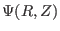

Notes on tokamak equilibrium
Youjun Hu
Institute of Plasma Physics, Chinese Academy of Sciences
Email: yjhu@ipp.cas.cn
Abstract:
Axisymmetric plasma equilibrium is the basis for the analysis of stability
and transport in tokamak plasmas. These are my notes when learning the
tokamak equilibrium theory. To test what I have learned, I have developed
two numerical codes, one of which constructs a flux coordinate system with a
desired form of Jacobian by using discrete numerical equilibrium data
 output by the EFIT code, another of which solves the fixed boundary
Grad-Shafranov equation in a general coordinate system. These notes serve as
a document for the codes. These notes are evolving. The latest version can
be found at:
http://theory.ipp.ac.cn/~yj/research_notes/tokamak_equilibrium.pdf
yj
2018-03-09